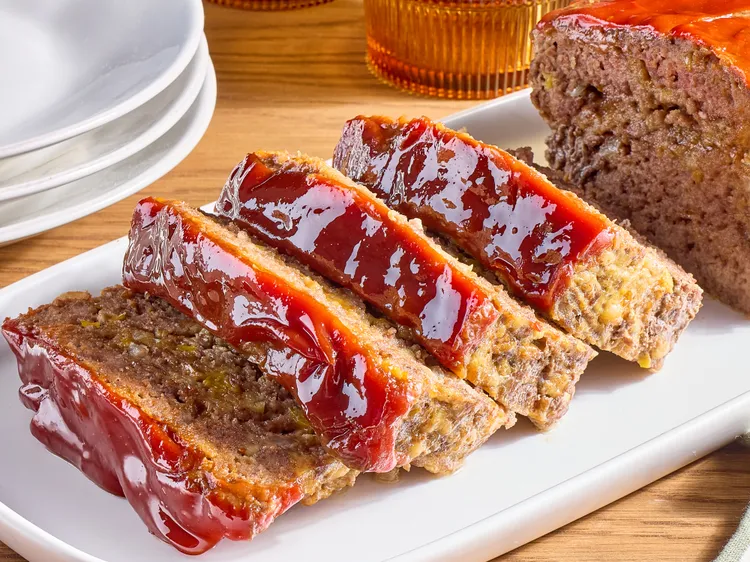

Copycat Cracker Barrel Meatloaf
This copycat Cracker Barrel meatloaf is juicy and tender,
with a zippy sauce baked on top just like the restaurant favorite.
Ritz crackers and sharp Cheddar cheese are baked in to give it the rich,
comforting flavor of the original.

Ingredients
- 1 tablespoon olive oil
- 1/2 cup finely chopped onion
- 1/2 cup finely chopped yellow bell pepper
- 2 large eggs
- 1/2 cup whole milk
- 3/4 teaspoon salt
- 1/2 teaspoon ground black pepper
- 1 cup shredded sharp Cheddar cheese
- 1 cup crushed buttery round crackers, such as Ritz®
- 2 pounds 80% lean ground beef
- 3/4 cup ketchup
- 2 tablespoons brown sugar
- 2 teaspoons yellow mustard
- 1 teaspoon Worcestershire sauce
Steps
- Step 1: Preheat the oven to 375 degrees F (190 degrees C). Grease a 10x15-inch baking pan.
- Step 2: Bring 1 cup butter and water to a boil in a large saucepan. Remove from heat, and stir in flour, sugar, eggs, sour cream, lemon extract, baking soda, and salt until smooth.
Pour batter into the prepared pan and spread into an even layer.
- Step 3: Bake in the preheated oven until cake is golden and a toothpick inserted near the center comes out clean, 20 to 22 minutes. Cool for 15 minutes.
- Step 4: Meanwhile, for glaze, place confectioner's sugar in a bowl.
- Step 5: Add milk, butter, and salt to a small saucepan over medium heat, and bring just to a boil, stirring occasionally; pour over confectioner's sugar and whisk to combine. If glaze is too thin, whisk in more confectioner's sugar.
Whisk in lemon extract and lemon zest.
- Step 6: Pour glaze over cake while still warm. Spread evenly over cake with a spatula. Cool completely before serving, about 50 minutes.
Home